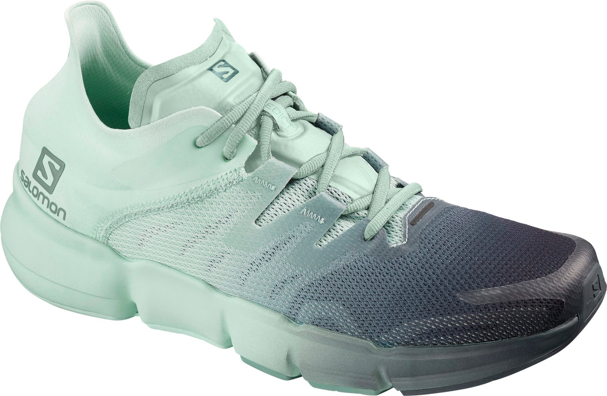

VAR - The Fair Football

Video assistant referee (VAR) technology is considered to be the real game changer in football world. No more unfair game is possible. VAR has been implemented in over 100 competitions worldwide. Throughout a match, the video assistant referee team constantly checks for clear and obvious errors related to these four match-changing situations. The VAR team communicates with the referee only for clear and obvious mistakes or serious missed incidents.
More infoHawk-eye for Tennis
Tired of an unfair tennis game? No more debate about whether the ball is in or out. New innovation Hawk-eye is a technology used in tennis to determine if the ball is in or out. This line-calling system uses multiple camera angles with high precision to track the tennis ball's trajectory. Hawk-Eye uses six or more computer-linked television cameras situated around the court.These six separate views are then combined to produce an accurate 3D representation of the path of the ball.
More infoSalomon Predict: The Innovative Runner Shoes
Running is more than just the strength of your feet. Your shoes plays a very big role as well. The Predict RA reimagines how a running shoe interacts with your foot, creating stability through geometry rather than density. The support and guidance of the shoe is designed to work on a smaller level, thanks to a unique midsole design that increases flexibility. What really makes the Predict RA work is the construction underfoot. Grooves through the midsole follow the major joints of the foot, segmenting the shoe into the areas where your foot might flex differently.
More info